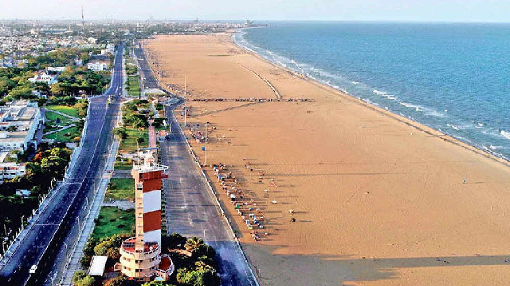
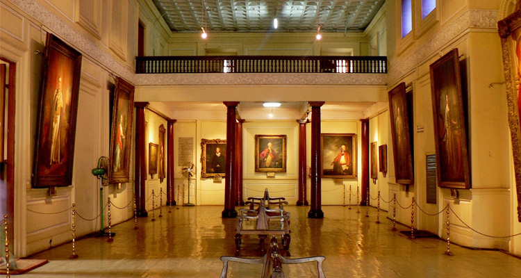

Chennai
Chennai, on the Bay of Bengal in eastern India, is the capital of the state of Tamil Nadu. The city is home to Fort St. George, built in 1644 and now a museum showcasing the city’s roots as a British military garrison and East India Company trading outpost, when it was called Madras. Religious sites include Kapaleeshwarar Temple, adorned with carved and painted gods, and St. Mary’s, a 17th-century Anglican church.
Marina Beach

Marina Beach, or simply the Marina, is a natural urban beach in Chennai, Tamil Nadu, India, along the Bay of Bengal.The beach runs from near Fort St. George in the north to Foreshore Estate in the south, a distance of 6.0 km (3.7 mi),making it the second longest urban beach in the world, after Cox's Bazar Beach. It is a prominent landmark in Chennai.The Marina is a primarily sandy beach, with an average width of 300 m (980 ft)and the width at the widest stretch is 437 m (1,434 ft). Bathing and swimming at the Marina are legally prohibited because of the dangers, as the undercurrent is very turbulent. It is one of the most crowded beaches in the country and attracts about 30,000 visitors a day during weekdays and 50,000 visitors a day during the weekends and on holidays. During summer months, about 15,000 to 20,000 people visit the beach daily.
Fort St.George Museum

Fort St. George (or historically, White Town) is a fortress in the coastal city of Chennai, India. Founded in 1639, it was the first English (later British) fortress in India. The construction of the fort provided the impetus for further settlements and trading activity, in what was originally an uninhabited land. Thus, it is a feasible contention to say that the city (formerly named Madras) evolved around the fortress. The fort currently houses the Tamil Nadu legislative assembly and other official buildings.
Santhome Cathedral Basilica

San Thome Church, officially known as St Thomas Cathedral Basilica and National Shrine of Saint Thomas, is a minor basilica of the Catholic Church in India, at the Santhome neighbourhood of Madras (Chennai), in Tamil Nadu. The present structure dates to 1523 AD, when it was rebuilt by the Portuguese, over the tomb of Thomas the Apostle, one of the Twelve commissioned by Jesus Christ. In 1896, it was renovated in the Madras province according to neo-Gothic designs, as was favoured by British architects in the late 19th century. It is one of the only three churches of the apostolic age of ancient Christianity, known for enshrining the tomb of an apostle and are still standing in the world today; the other two being the St Peter's Basilica in Vatican City and Santiago de Compostela Cathedral in Galicia, Spain. In antiquity, there was a basilica built over the tomb of the Apostle Philip in Hierapolis of Phrygia, present-day Pamukkale.